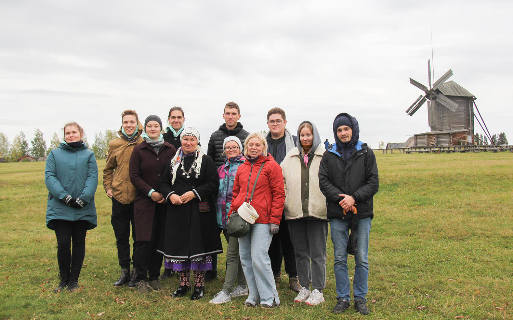
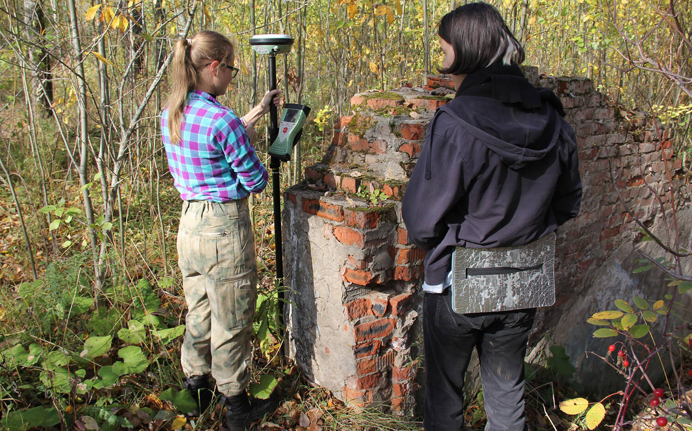
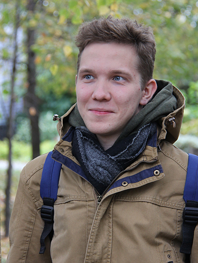

Данный сайт посвящён Междисциплинарной экспедиции МИИГАиК на «Городище Иднакар», которая состоялась в рамках программы «Открываем Россию заново» с 25.09.22 по 02.10.22
В экспедицию отправилось 10 студентов четырёх направлений университета: геодезисты, фотограмметристы, картографы и архитекторы под руководством двух преподавателей: Скрыпицыной Т.Н. и Листкова Н.С.
Экспедиция продлилась 7 дней и включала: 5 дней работ на городище и в музее «Иднакар» и 2 дня знакомства с местной культурой и бытом республики Удмуртия.


Работа велась как непосредственно в музее-заповеднике "Иднакар", так и по возвращении в Москву.
О том как прошла экспедиция, какие работы были проведены и какие впечатления получили студенты можно узнать ниже в разделе Результаты.
В том же разделе, а также во вкладках "Карта" и "Модели" представлены итоги, полученные по результатам камеральной обработки полевых работ.
Участники Экспедиции
Скрыпицына Т.Н. к.т.н., доцент кафедры Фотограмметрии
Листков Н.С. ст. преподаватель кафедры Геодезии
Фальков Данил Геодезист Пикетаж, съёмка местности

Смирнов Евгений Фотограмметрист Съёмка местности с БПЛА
Кочнева Дарья Фотограмметрист Создание моделей местности
Бурдасов Александр Картограф Организатор в штатском